DeckHand shaped skins
Eleven non-skull directions. Each player is one shaped, transparent window (shown over a wallpaper); the browser, sampler and other modules float separately. Contact sheet.

Comparison
| Concept | Silhouette | Windows | Density | Style | Hardest engine requirement | Usability | Buildable now |
|---|---|---|---|---|---|---|---|
| 01 Boombox | Wide rounded body with an arched carry handle (see-through gap) and a telescopic antenna | Boombox + cassette browser + tape-door sampler | Medium | Chunky chrome and graphite, carry handle, speaker cones | Handle gap and annular jog | 4/5 big, familiar, labelled | 4/5 |
| 02 Octopus | Mantle dome with two eyes and eight tapering tentacles curling downward | Octopus + clam browser + bubble sampler | Dense, organic | Bioluminescent deep-sea purple, glowing eyes | Path sliders on tapered tentacles | 2/5 curved faders and knob chains are unusual to read | 2/5 |
| 03 Scarab (closed / open) | Beetle seen from above with two huge elytra swung open, head, legs; closed form is a single oval | Open beetle + closed compact form + dung-ball browser | Dense when open | Iridescent beetle shell, gold trim | Closed / open shell states | 3/5 wide shells, two states to learn | 3/5 |
| 04 Reel-to-Reel | Two huge reels flanking a head tower over a plinth with feet | Tape machine + tape-box browser + tape-loop cartridge | Medium | Champagne metal and black faceplate, analogue tape | Reels with see-through spokes | 4/5 conventional plinth, big reels | 4/5 |
| 05 Satellite | Central hub with antenna and two chamfered solar wings on truss arms | Satellite + solar-array browser + probe-pod sampler | Medium, clean | Gold foil, silver hub, blue solar cells, space | Almost none (chamfered panels) | 4/5 clear regions, wide spacing | 5/5 |
| 06 Spectacles | Two round lenses joined by a tall bridge plate, vertical temple arms and bifocal tabs | Glasses + case browser + lens-cloth tray | Medium | Tortoiseshell frames and gold rims, retro optics | Round lens clipping | 3/5 arms are narrow, bridge mixer is tall | 4/5 |
| 07 Orrery | A single big brass ring (the only circular main window of the set) | Circular dome + scroll browser + hex sampler | Dense, concentric | Brass instrument, graduated ring, starry dome | Polar placement and arc sliders | 3/5 rotated pads and curved sliders need learning | 2/5 |
| 08 Lighthouse (tall and narrow) | Tall narrow tower (about 4.6 wide to 1 high) for the screen edge, with a gallery and a lantern | Tower (640 x 1950) + boat browser | Dense, vertical | Stripe-painted tower, beacon, harbour | Edge docking | 3/5 long vertical travel but never wide | 4/5 |
| 09 Pebble (compact pocket mode) | A smooth pebble with a thumb dent, small enough for a screen corner | Pebble (740 x 330) + hot-cue dock + loop dock + mix dock + picker | Minimal | Soft stone, two accent colours | Compact/expanded mode switch | 3/5 tiny at 1x by design, extras live in docks | 5/5 |
| 10 Mushroom Cluster | Two big caps with a small purple cap between them, flared stems, mossy ground | Three mushrooms + bracket-fungus browser + spore sampler | Dense, organic | Spotted toadstools on a mossy mound | Fan of rotated gill pads, root slider | 2/5 organic spacing, rotated pads | 2/5 |
| 11 Predator Owl | Head-on bird of prey with ear tufts, spread wings with fanned primaries, and talons reaching down | Owl + perch browser + shed-feather FX + pellet sampler | Dense | Night/ember owl (plus an ice palette), glowing eyes, feather buttons | Alpha hit-testing of feather and talon shapes | 3/5 feather pads are big but fanned and tilted | 2/5 |
Every concept needs, first: Per-window transparency with shaped hit-testing (alpha-based hit = alpha, cut-out holes such as handle gaps and reel spokes; docs/SKINS.md has the outline polygon, limit 256 points, but the shell still shows a rectangle); Multiple independent floating windows with remembered positions, optional snapping/docking to each other (browser, sampler, effects etc. are separate skin windows); Drag-region declaration per window (move by the body or the grip motif; no title bar).
01 Boombox
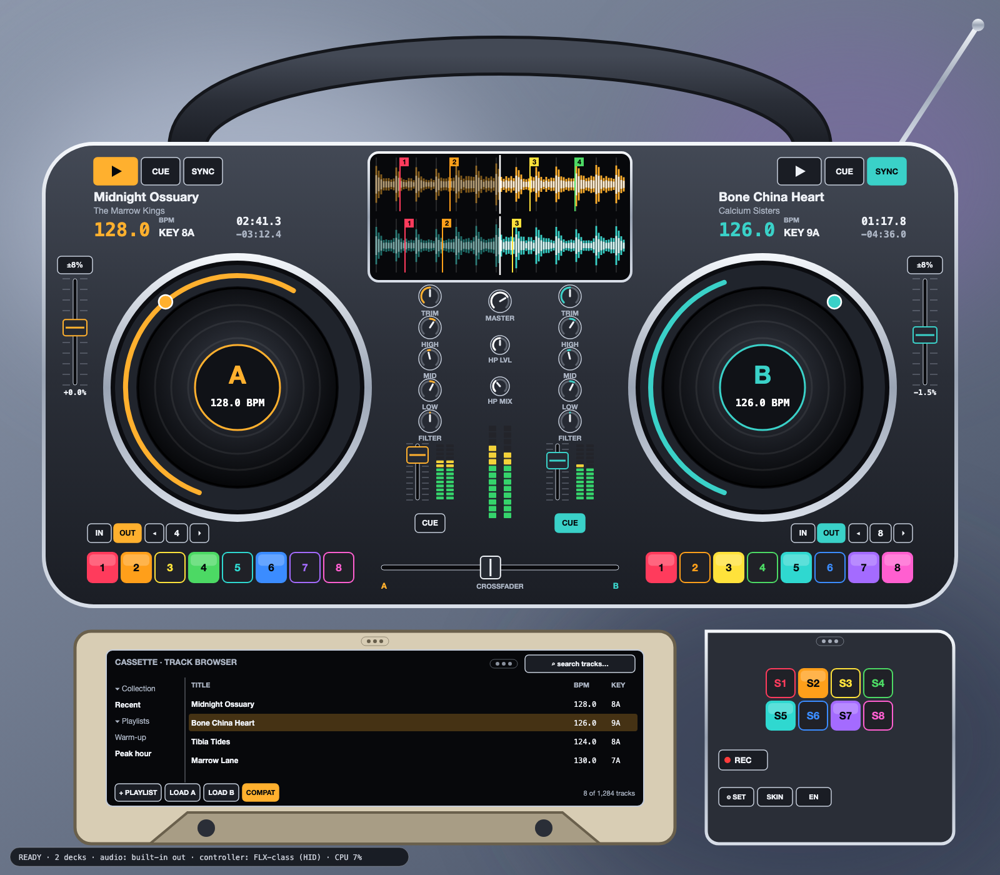
A ghetto-blaster whose two speaker cones are the platters: the rubber surround is the jog ring, the dust cap shows deck letter and BPM. A tape-style display in the middle carries both waveforms, the mixer sits between the cones, and the browser is a floating cassette.
Control map
| Part | Controls |
|---|---|
| Left / right cone | Jog (surround ring with marker and progress arc), dust cap read-out |
| Display (centre top) | Two stacked waveform lanes with cues and a shared playhead |
| Top corners | Play / cue / sync, title, artist, BPM, key, time |
| Cone sides | Tempo fader + range |
| Under cones | Loop in/out/size, 8 hot-cue pads in one row |
| Centre column | Two channel strips (trim, EQ, filter, fader, meter, cue), master, headphone, master meter |
| Base strip | Crossfader |
| Floating cassette | Track browser |
| Floating tape door | Sampler, REC, settings / skin / language |
Floating windows
Cassette (browser) and tape-door (sampler, REC, app buttons) float below; status pill. Browser: cassette with screws and a trapezoid base. Sampler: cassette-door plate.
Animates
Cones pump with the kick (scale 1.0 to 1.02 on beat); surround marker turns with the platter; antenna ball blinks on beat.
Engine needs
- Per-window transparency with shaped hit-testing (alpha-based hit = alpha, cut-out holes such as handle gaps and reel spokes; docs/SKINS.md has the outline polygon, limit 256 points, but the shell still shows a rectangle)
- Multiple independent floating windows with remembered positions, optional snapping/docking to each other (browser, sampler, effects etc. are separate skin windows)
- Drag-region declaration per window (move by the body or the grip motif; no title bar)
- Annular/round jog widget: ring hit-test, rotating position marker, progress arc, centre area that passes clicks to the waveform or text inside
- Waveform, text and widget clipping to a circle or polygon (eye, lens, porthole) instead of a rectangle
- Handle gap needs a hole in the window shape.
Usability
Easier: large familiar layout, everything labelled. Harder: wide (1460 px) body.

02 Octopus
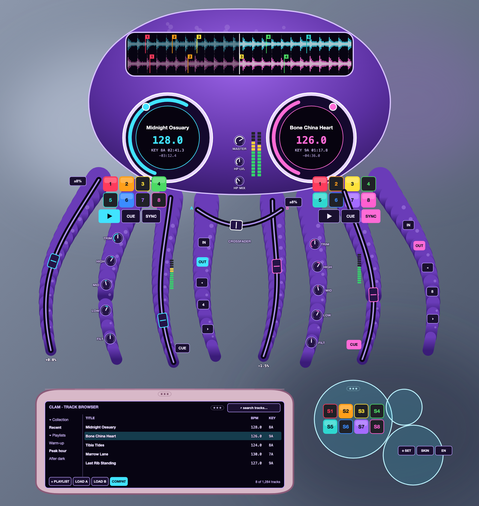
The two eyes are the decks (jog ring around a read-out), a brow-plate carries both waveforms in stacked lanes, and the tentacles are the controls: the outer pair are tempo sliders, the next pair carry the EQ knobs strung along them, the third pair are curved channel faders, and the inner pair hold loop buttons like suckers.
Control map
| Part | Controls |
|---|---|
| Eyes | Jog ring and deck read-out (title, BPM, key, time) |
| Brow | Stacked A / B waveforms with cue flags and playhead |
| Under the eyes | Hot-cue pads, play / cue / sync |
| Funnel (centre) | Master, headphone level, headphone mix, master meter |
| Tentacles 1 / 8 | Tempo path sliders + range |
| Tentacles 2 / 7 | Trim, high, mid, low, filter knobs along the path |
| Tentacles 3 / 6 | Channel fader (path), meter, cue |
| Tentacles 4 / 5 | Loop in/out/size buttons |
| Beak smile | Crossfader on a curved path |
| Floating clam | Track browser |
| Floating bubbles | Sampler, settings / skin / language |
Floating windows
Clam-shell browser and a bubble cluster with the sampler. Browser: scalloped clam. Sampler: three translucent bubbles.
Animates
Tentacles sway on a slow sine, tips curl on the beat, eyes pulse with channel level, bubbles drift up.
Engine needs
- Per-window transparency with shaped hit-testing (alpha-based hit = alpha, cut-out holes such as handle gaps and reel spokes; docs/SKINS.md has the outline polygon, limit 256 points, but the shell still shows a rectangle)
- Multiple independent floating windows with remembered positions, optional snapping/docking to each other (browser, sampler, effects etc. are separate skin windows)
- Drag-region declaration per window (move by the body or the grip motif; no title bar)
- Annular/round jog widget: ring hit-test, rotating position marker, progress arc, centre area that passes clicks to the waveform or text inside
- Waveform, text and widget clipping to a circle or polygon (eye, lens, porthole) instead of a rectangle
- Sliders and knob chains that travel along a bezier/arc path with matching hit-testing (tentacles, orbits, roots, crossfader smile)
- Tapered tentacle art can be sprites; sliders need path hit-testing.
Usability
Harder: faders curve and EQ knobs are spread out; pads are far from the transport. Easier: eyes are huge targets.

03 Scarab (closed / open)
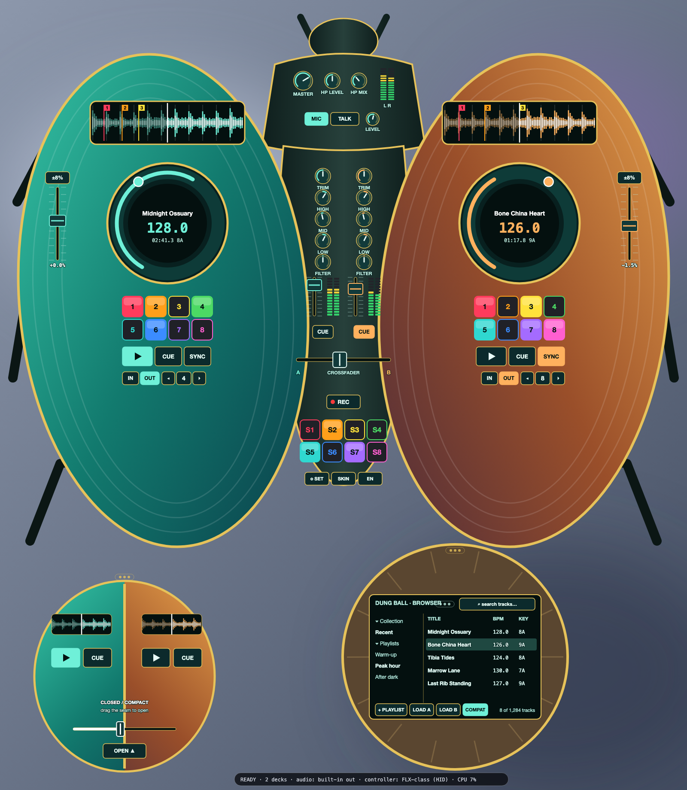
A scarab whose wing cases open to reveal the mixer: open, each elytra is a deck (jog, waveform, pads, loops, transport, tempo) and the abdomen between them is the mixer; closed, the shell shrinks to a compact two-deck player. Both states are drawn in the mockup; the browser is a rolling dung ball.
Control map
| Part | Controls |
|---|---|
| Left elytra / right elytra (open) | Jog, read-out, waveform lane, 8 hot-cue pads, loop in/out/size, transport, tempo + range |
| Pronotum (shield) | Master, headphone level / mix, master meter, mic |
| Abdomen | Two channel strips, crossfader, REC, sampler pads, settings / skin / language |
| Closed shell (floating) | Mini waveform and play / cue for each deck, crossfader, OPEN hinge |
| Dung ball (floating) | Track browser |
Floating windows
Closed compact beetle (alternate state of the main window) and a circular dung-ball browser. Browser: round ball. Closed state: single oval with seam.
Animates
Elytra swing from 0 to about 70 degrees about the hinge when OPEN is pressed (container rotate with children); closed shell breathes; wing shine sweeps on beat.
Engine needs
- Per-window transparency with shaped hit-testing (alpha-based hit = alpha, cut-out holes such as handle gaps and reel spokes; docs/SKINS.md has the outline polygon, limit 256 points, but the shell still shows a rectangle)
- Multiple independent floating windows with remembered positions, optional snapping/docking to each other (browser, sampler, effects etc. are separate skin windows)
- Drag-region declaration per window (move by the body or the grip motif; no title bar)
- Annular/round jog widget: ring hit-test, rotating position marker, progress arc, centre area that passes clicks to the waveform or text inside
- Waveform, text and widget clipping to a circle or polygon (eye, lens, porthole) instead of a rectangle
- Two-state shell (closed/open) with animated transform of grouped widgets and swapping of window layouts
- Compact/expanded window modes with remembered positions (switch between a tiny shell and the full skin, docks that appear on demand)
- Two layouts of the same skin window with an animated transition.
Usability
Easier: very large jogs and pads. Harder: wide when open and the mixer is far from the transport.

04 Reel-to-Reel
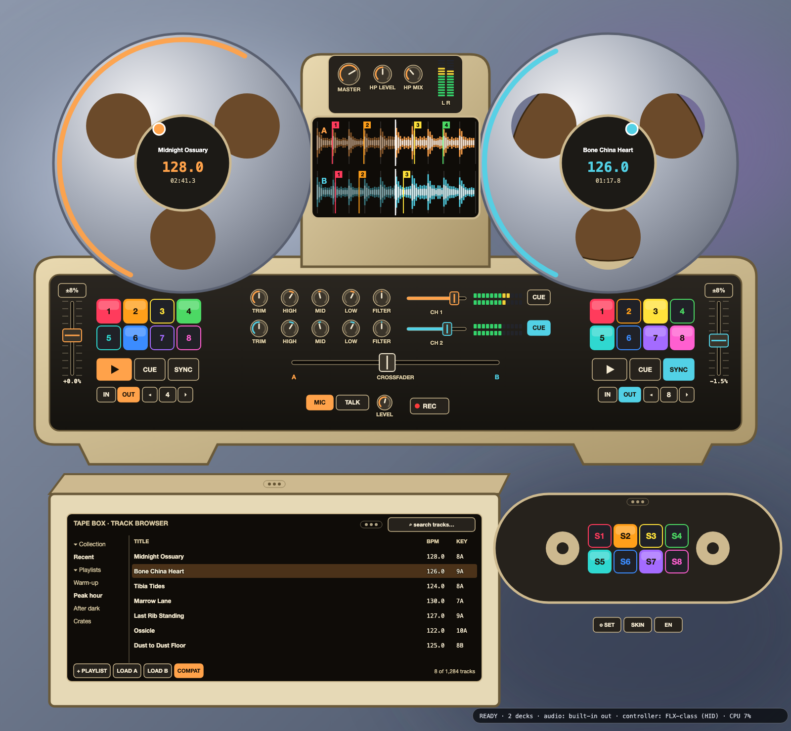
Each deck is a reel: the hub is the jog and read-out, the rim carries a position arc, and the visible tape pack shrinks as the track plays. The tower between the reels is the tape head with both waveforms as two tape runs; the plinth holds the mixer and per-deck controls.
Control map
| Part | Controls |
|---|---|
| Reels | Jog hub with marker, title / BPM / time, rim position arc, tape-pack remaining time |
| Head tower window | Two waveform runs A / B, playhead on the head |
| Tower top | Master, headphone, master meter |
| Plinth left / right | Tempo, 8 hot-cue pads, transport, loop in/out/size |
| Plinth centre | Two channel rows, crossfader, mic, REC |
| Floating tape box | Track browser |
| Floating tape-loop cartridge | Sampler, settings / skin / language |
Floating windows
Tape-box browser and a stadium-shaped tape-loop cartridge. Browser: tape box with flap. Sampler: stadium cartridge with hubs.
Animates
Reels turn with the platter, the pack radius follows remaining time, VU-lit master meter.
Engine needs
- Per-window transparency with shaped hit-testing (alpha-based hit = alpha, cut-out holes such as handle gaps and reel spokes; docs/SKINS.md has the outline polygon, limit 256 points, but the shell still shows a rectangle)
- Multiple independent floating windows with remembered positions, optional snapping/docking to each other (browser, sampler, effects etc. are separate skin windows)
- Drag-region declaration per window (move by the body or the grip motif; no title bar)
- Annular/round jog widget: ring hit-test, rotating position marker, progress arc, centre area that passes clicks to the waveform or text inside
- Waveform, text and widget clipping to a circle or polygon (eye, lens, porthole) instead of a rectangle
- Spoke cut-outs are holes in the reel sprite.
Usability
Easier: plinth is a conventional layout. Harder: the waveform window is small and the reels cover the corners.

05 Satellite
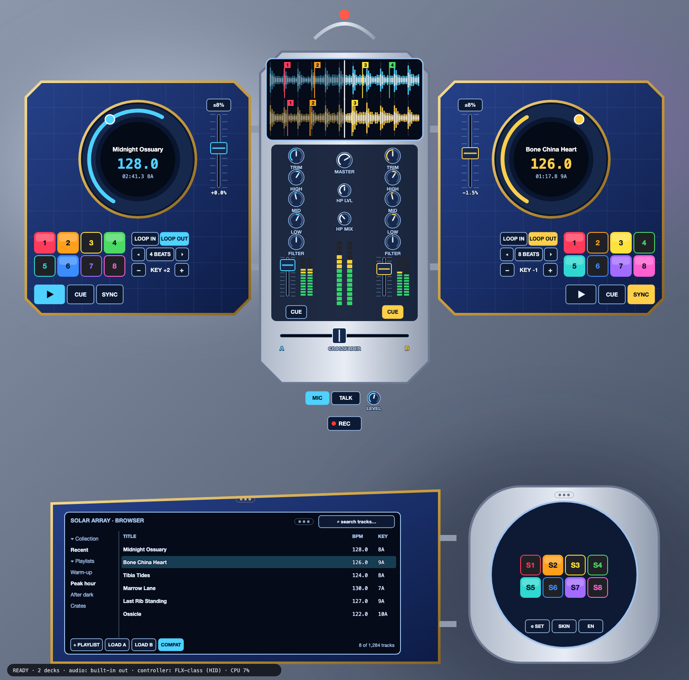
A satellite: the two solar wings are the decks (jog, pads, loops, transport, tempo) and the hub between them is the mixer with the shared waveform display on top. A detached solar array is the browser and a probe pod holds the sampler.
Control map
| Part | Controls |
|---|---|
| Left / right solar wing | Jog + read-out, 8 pads, loop in/out/size, key shift, transport, tempo + range |
| Hub display | Two stacked waveforms |
| Hub body | Two channel strips, master, headphone, master meter, crossfader |
| Under the hub | Mic, REC |
| Floating solar array | Track browser |
| Floating probe pod | Sampler, settings / skin / language |
Floating windows
Solar-array browser on hinge arms and a rounded probe pod. Browser: tilted solar panel. Sampler: rounded-square pod with porthole.
Animates
Wings tilt a few degrees toward the louder deck, antenna LED blinks on beat, cell grid shimmers.
Engine needs
- Per-window transparency with shaped hit-testing (alpha-based hit = alpha, cut-out holes such as handle gaps and reel spokes; docs/SKINS.md has the outline polygon, limit 256 points, but the shell still shows a rectangle)
- Multiple independent floating windows with remembered positions, optional snapping/docking to each other (browser, sampler, effects etc. are separate skin windows)
- Drag-region declaration per window (move by the body or the grip motif; no title bar)
- Annular/round jog widget: ring hit-test, rotating position marker, progress arc, centre area that passes clicks to the waveform or text inside
- Waveform, text and widget clipping to a circle or polygon (eye, lens, porthole) instead of a rectangle
- Mostly rectangles with chamfered corners: closest to the default skin.
Usability
Easier: every block has plenty of room. Harder: wide (1480 px) spread.

06 Spectacles
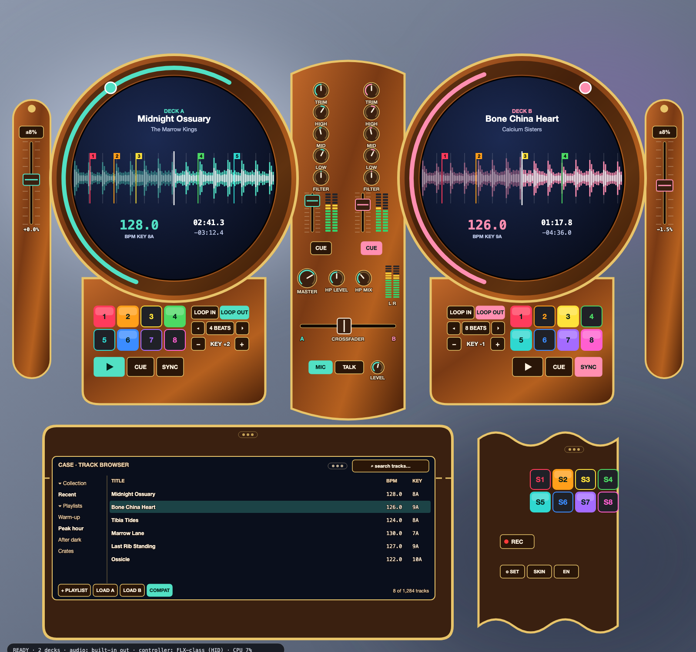
Twin round lenses are the platters (rim = jog, glass = waveform and read-out) and the tall bridge between them is the mixer. Bifocal tabs below each lens hold pads, loops and transport; the temple arms are vertical tempo sliders.
Control map
| Part | Controls |
|---|---|
| Lenses | Jog rim, waveform with cues, title, artist, BPM, key, time, remaining |
| Bridge | Two channel strips, master, headphone, meter, crossfader, mic |
| Bifocal tabs | 8 hot-cue pads, loop in/out/size, key shift, transport |
| Temple arms | Tempo + range |
| Floating case | Track browser |
| Floating lens-cloth tray | Sampler, REC, settings / skin / language |
Floating windows
Glasses case (browser) and a wavy-edged cloth tray. Browser: hard case with strap. Tray: wavy-edged cloth.
Animates
Lens glints sweep on beat, rims rotate with the platter, bridge LEDs follow channel level.
Engine needs
- Per-window transparency with shaped hit-testing (alpha-based hit = alpha, cut-out holes such as handle gaps and reel spokes; docs/SKINS.md has the outline polygon, limit 256 points, but the shell still shows a rectangle)
- Multiple independent floating windows with remembered positions, optional snapping/docking to each other (browser, sampler, effects etc. are separate skin windows)
- Drag-region declaration per window (move by the body or the grip motif; no title bar)
- Annular/round jog widget: ring hit-test, rotating position marker, progress arc, centre area that passes clicks to the waveform or text inside
- Waveform, text and widget clipping to a circle or polygon (eye, lens, porthole) instead of a rectangle
- Lens shapes are two circles plus rectangles.
Usability
Easier: huge round waveform with read-out inside. Harder: mixer is a tall narrow strip in the middle.

07 Orrery
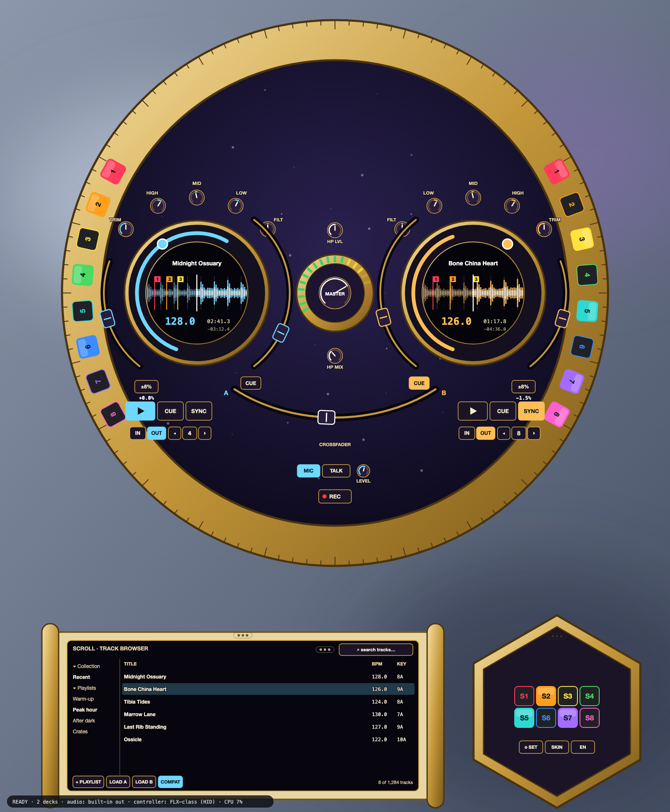
A brass orrery: the sun is the master with an arc meter, two planets are the decks, hot-cue pads ride the outer ring turned to follow it, EQ knobs orbit above each planet and the channel faders and tempo sliders are arcs. The crossfader is the lower orbit.
Control map
| Part | Controls |
|---|---|
| Planets | Jog ring, waveform lane, title, BPM, time |
| Orbit above each planet | Trim, high, mid, low, filter knobs |
| Arc on the sun side | Channel fader, meter, cue |
| Arc below the planet | Tempo + range |
| Outer ring | 8 hot-cue pads per deck (rotated along the ring) |
| Sun | Master, arc meter, headphone level / mix |
| Lower orbit | Crossfader on an arc |
| Dome base | Transport, loop, mic, REC |
| Floating scroll | Track browser |
| Floating hex tile | Sampler, settings / skin / language |
Floating windows
Scroll browser with brass rollers and a hexagonal sampler tile. Browser: scroll. Sampler: hexagon.
Animates
Planets rotate slowly with the platter, outer ring ticks scroll with the beat, sun arc follows the master level.
Engine needs
- Per-window transparency with shaped hit-testing (alpha-based hit = alpha, cut-out holes such as handle gaps and reel spokes; docs/SKINS.md has the outline polygon, limit 256 points, but the shell still shows a rectangle)
- Multiple independent floating windows with remembered positions, optional snapping/docking to each other (browser, sampler, effects etc. are separate skin windows)
- Drag-region declaration per window (move by the body or the grip motif; no title bar)
- Annular/round jog widget: ring hit-test, rotating position marker, progress arc, centre area that passes clicks to the waveform or text inside
- Waveform, text and widget clipping to a circle or polygon (eye, lens, porthole) instead of a rectangle
- Sliders and knob chains that travel along a bezier/arc path with matching hit-testing (tentacles, orbits, roots, crossfader smile)
- Rotated widgets (pads and buttons following a ring or a fan)
- Arc-shaped segmented meters bound to a level (beacon bulb, sun)
- Pad ring is eight rotated buttons per deck.
Usability
Harder: sliders are arcs and pads are rotated. Easier: concentric grouping is easy to learn and the dome is one compact shape.

08 Lighthouse (tall and narrow)
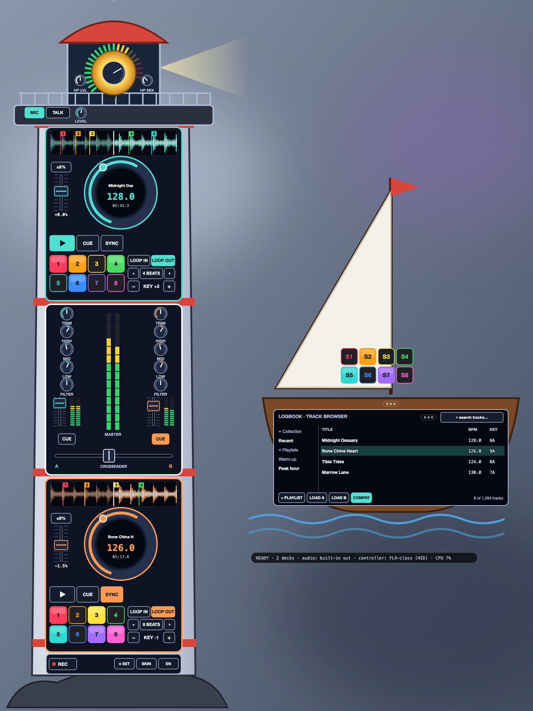
A lighthouse designed to live at a screen edge: the lantern is the master with a beacon-bulb arc meter, then deck A, the mixer, deck B and a door at the base, stacked top to bottom. A sailing boat floats beside it as the browser with the sampler on its sail.
Control map
| Part | Controls |
|---|---|
| Lantern | Beacon arc meter, master knob, headphone level / mix |
| Gallery | Mic, talk, level |
| Deck A section | Waveform, jog read-out, tempo, transport, 8 pads, loop, key shift |
| Mixer section | Two channel strips, channel meters, crossfader |
| Deck B section | Same as deck A |
| Door | REC, settings / skin / language |
| Floating boat | Track browser |
| Floating sail | Sampler |
Floating windows
A boat (browser hull, sampler on the sail) and a status pill. Browser: hull. Sampler: sail triangle.
Animates
Beam sweeps with the beat, bulb ring follows master level, waves lap under the boat.
Engine needs
- Per-window transparency with shaped hit-testing (alpha-based hit = alpha, cut-out holes such as handle gaps and reel spokes; docs/SKINS.md has the outline polygon, limit 256 points, but the shell still shows a rectangle)
- Multiple independent floating windows with remembered positions, optional snapping/docking to each other (browser, sampler, effects etc. are separate skin windows)
- Drag-region declaration per window (move by the body or the grip motif; no title bar)
- Annular/round jog widget: ring hit-test, rotating position marker, progress arc, centre area that passes clicks to the waveform or text inside
- Arc-shaped segmented meters bound to a level (beacon bulb, sun)
- Screen-edge docking and auto-hide for a tall narrow window
- Tower is rectangles; edge docking and auto-hide are the real requirement.
Usability
Easier: one narrow column, little pointer travel horizontally. Harder: decks stack, so waveforms cannot be compared side by side.

09 Pebble (compact pocket mode)
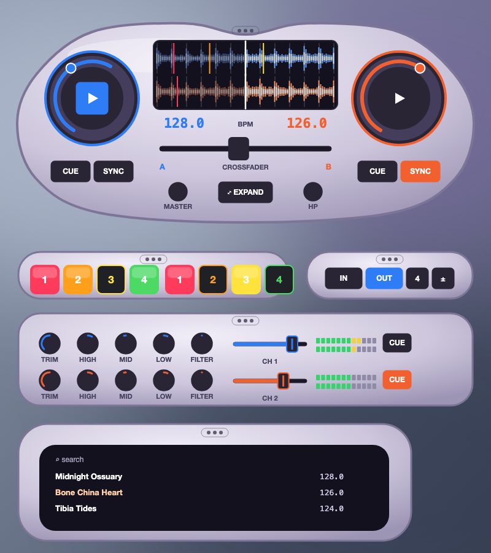
An extremely compact two-deck player: two mini platters with play inside, a two-lane waveform, BPMs, crossfader and cue / sync, all at 1x with 28 px minimum targets. Everything else (hot cues, loops, EQ and faders, browser) lives in small docks that appear on demand beside it.
Control map
| Part | Controls |
|---|---|
| Mini platters | Jog (ring marker) with play |
| Under platters | Cue, sync per deck |
| Centre | Two waveform lanes, both BPMs, crossfader, master and headphone knobs, EXPAND |
| Hot-cue dock (floating) | 4 pads per deck |
| Loop dock (floating) | Loop in/out/size and tempo nudge |
| Mix dock (floating) | Trim, EQ, filter, channel fader, meter, cue per channel |
| Picker (floating) | Search and track list |
Floating windows
Four docks: hot-cue pill, loop pill, mix dock and track picker. All pill-shaped, same stone material, each with grip dots.
Animates
Platters tick, thumb dent glows with the beat, docks slide out from the pebble edge.
Engine needs
- Per-window transparency with shaped hit-testing (alpha-based hit = alpha, cut-out holes such as handle gaps and reel spokes; docs/SKINS.md has the outline polygon, limit 256 points, but the shell still shows a rectangle)
- Multiple independent floating windows with remembered positions, optional snapping/docking to each other (browser, sampler, effects etc. are separate skin windows)
- Drag-region declaration per window (move by the body or the grip motif; no title bar)
- Annular/round jog widget: ring hit-test, rotating position marker, progress arc, centre area that passes clicks to the waveform or text inside
- Compact/expanded window modes with remembered positions (switch between a tiny shell and the full skin, docks that appear on demand)
- Mini mode and the full skin share bindings; the docks are normal skin windows.
Usability
Easier to park in a corner and glance at. Harder: no pads or EQ on the pebble itself, small targets.

10 Mushroom Cluster
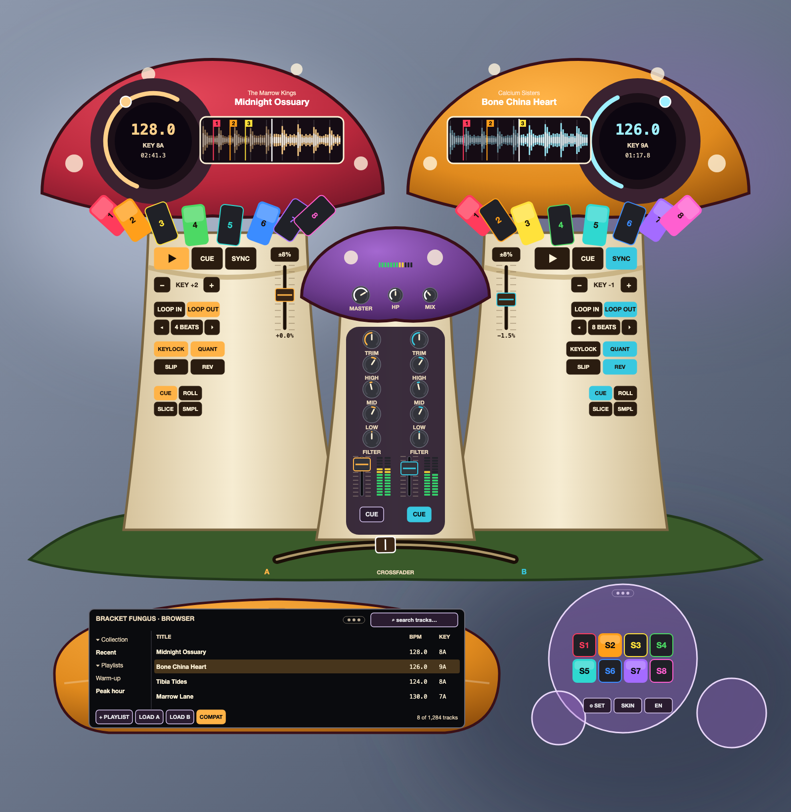
Two big toadstools are the decks: the cap face holds the platter, title and waveform, and the gills underneath fan out as the eight hot-cue pads. Stems carry transport, loops and tempo; the small purple mushroom in between is the mixer, and the crossfader runs along the roots.
Control map
| Part | Controls |
|---|---|
| Big caps | Jog, BPM, key, time, title, artist, waveform lane |
| Gills | 8 hot-cue pads per deck (fan, rotated) |
| Stems | Transport, key shift, loop, key lock / quantise / slip / reverse, pad modes, tempo + range |
| Small cap | Master, headphone, level meter |
| Small stem | Two channel strips with EQ, faders, meters, cue |
| Roots | Crossfader on a curve |
| Floating bracket fungus | Track browser |
| Floating spore cluster | Sampler, settings / skin / language |
Floating windows
A bracket-fungus shelf (browser) and a spore-bubble cluster (sampler). Browser: half-moon bracket fungus. Sampler: translucent spore bubbles.
Animates
Caps squash on the kick, spores drift from the gills, stem rings glow with channel level.
Engine needs
- Per-window transparency with shaped hit-testing (alpha-based hit = alpha, cut-out holes such as handle gaps and reel spokes; docs/SKINS.md has the outline polygon, limit 256 points, but the shell still shows a rectangle)
- Multiple independent floating windows with remembered positions, optional snapping/docking to each other (browser, sampler, effects etc. are separate skin windows)
- Drag-region declaration per window (move by the body or the grip motif; no title bar)
- Annular/round jog widget: ring hit-test, rotating position marker, progress arc, centre area that passes clicks to the waveform or text inside
- Waveform, text and widget clipping to a circle or polygon (eye, lens, porthole) instead of a rectangle
- Sliders and knob chains that travel along a bezier/arc path with matching hit-testing (tentacles, orbits, roots, crossfader smile)
- Rotated widgets (pads and buttons following a ring or a fan)
- Cap domes with a scalloped underside are sprites with alpha hit-testing.
Usability
Harder: pads are fanned and rotated, controls spread over stems. Easier: giant caps and clear colour coding.

11 Predator Owl
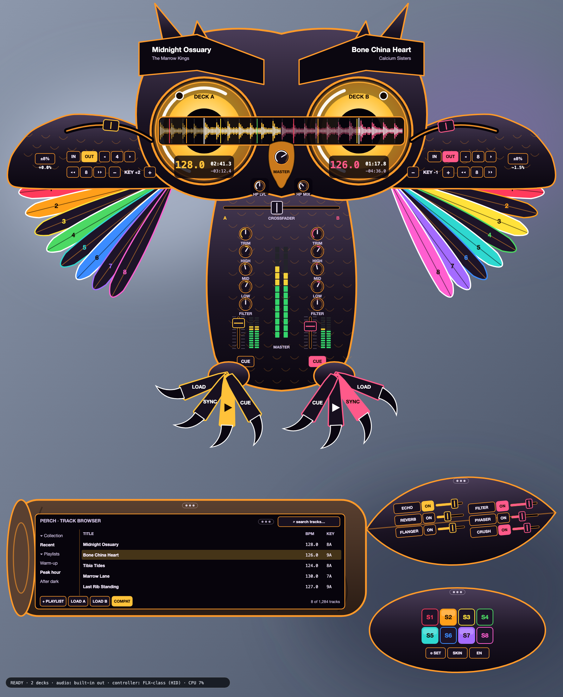
A menacing owl mid-strike: heavy angled brow slabs carry the deck read-outs, two enormous glowing eyes are the decks (iris = jog ring, pupil = centre, one waveform band running through both eyes), the hooked beak holds the master knob, the chest is the mixer, the spread wings carry rows of feather-shaped buttons, and each foot is a set of four talon-toes for load, sync, play and cue.
Control map
| Part | Controls |
|---|---|
| Eyes | Jog (glowing iris ring with marker and progress arc), BPM, key, time, remaining, waveform band through both eyes with cues and playheads |
| Brow slabs | Title and artist per deck |
| Beak | Master knob; headphone level / mix beside it |
| Upper chest | Crossfader |
| Chest | Two channel strips (trim, EQ, filter, fader, meters, cue) and master meter |
| Primaries (8 per wing) | Hot-cue pads as feather-shaped buttons |
| Coverts / leading edge | Tempo slider along the leading edge, range, loop in/out/size, beat jump, key shift |
| Talons (each foot) | Load, sync, play, cue as four big toes |
| Floating perch | Track browser |
| Floating shed feather | Effects: three slots per deck |
| Floating pellet | Sampler, settings / skin / language |
Floating windows
Perch branch (browser), shed feather (effects) and a pellet (sampler); status pill. Browser: log with end rings. Effects: shed feather. Sampler: pellet oval. Ice palette is in mockup-ice.png.
Animates
Eyes glow with channel level and the pupils dilate on the kick; primaries flare slightly on pad hits; claws flex on transport press; ear tufts twitch on beat.
Engine needs
- Per-window transparency with shaped hit-testing (alpha-based hit = alpha, cut-out holes such as handle gaps and reel spokes; docs/SKINS.md has the outline polygon, limit 256 points, but the shell still shows a rectangle)
- Multiple independent floating windows with remembered positions, optional snapping/docking to each other (browser, sampler, effects etc. are separate skin windows)
- Drag-region declaration per window (move by the body or the grip motif; no title bar)
- Annular/round jog widget: ring hit-test, rotating position marker, progress arc, centre area that passes clicks to the waveform or text inside
- Waveform, text and widget clipping to a circle or polygon (eye, lens, porthole) instead of a rectangle
- Sliders and knob chains that travel along a bezier/arc path with matching hit-testing (tentacles, orbits, roots, crossfader smile)
- Rotated widgets (pads and buttons following a ring or a fan)
- Feather and talon buttons are rotated shaped widgets with alpha hit-testing; gaps between flight feathers are transparent.
Usability
Easier: talon transport and feather pads are huge. Harder: fanned, tilted pads and a wide wingspan; tempo sliders are curved.

Consolidated engine needs
- Per-window transparency with shaped hit-testing (alpha-based hit = alpha, cut-out holes such as handle gaps and reel spokes; docs/SKINS.md has the outline polygon, limit 256 points, but the shell still shows a rectangle) (11 of 11)
- Multiple independent floating windows with remembered positions, optional snapping/docking to each other (browser, sampler, effects etc. are separate skin windows) (11 of 11)
- Drag-region declaration per window (move by the body or the grip motif; no title bar) (11 of 11)
- Annular/round jog widget: ring hit-test, rotating position marker, progress arc, centre area that passes clicks to the waveform or text inside (11 of 11)
- Waveform, text and widget clipping to a circle or polygon (eye, lens, porthole) instead of a rectangle (9 of 11)
- Sliders and knob chains that travel along a bezier/arc path with matching hit-testing (tentacles, orbits, roots, crossfader smile) (4 of 11)
- Rotated widgets (pads and buttons following a ring or a fan) (3 of 11)
- Arc-shaped segmented meters bound to a level (beacon bulb, sun) (2 of 11)
- Compact/expanded window modes with remembered positions (switch between a tiny shell and the full skin, docks that appear on demand) (2 of 11)
- Two-state shell (closed/open) with animated transform of grouped widgets and swapping of window layouts (1 of 11)
- Screen-edge docking and auto-hide for a tall narrow window (1 of 11)